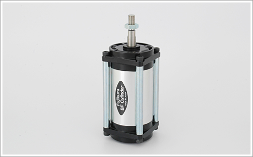
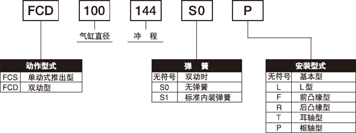

BF气缸

BF气缸是需要避免空气泄漏，针对微小压力变动有敏感反应的场合下，尤为适用。
| 作动方式 | 单动推出型，双动型 |
|---|---|
| 气缸径（mm ） | 10～200 |
| 行程（mm） | 6～320 |
| 使用流体 | 洁净压缩空气（无需供油） |
| 使用压力范围（MPa） | 0.01～0.7 （※1） |
| 使用温度范围(℃) | 0～60 |
| 轴承型 | 干性衬套轴承 |
| 安装方式 | 基本型，L型，F支架，R支架，T支架，P支架 |
※1 双动气缸的缸径为φ25开始，压力范围0.02～0.7
※详细安装方式请参照产品目录。 →目录（PDF）
| 缸径 | 10 | 12.5 | 16 | 20 | 25 | 31.5 | 40 | 50 | ||||||||||||
|---|---|---|---|---|---|---|---|---|---|---|---|---|---|---|---|---|---|---|---|---|
| 行程 | 6 | 11 | 10 | 16 | 8 | 22 | 6 | 16 | 26 | 14 | 24 | 35 | 8 | 24 | 36 | 48 | 16 | 36 | 50 | 64 |
| 缸径 | 63 | 80 | 100 | 112 | 125 | |||||||||||||||
|---|---|---|---|---|---|---|---|---|---|---|---|---|---|---|---|---|---|---|---|---|
| 行程 | 16 | 42 | 59 | 78 | 30 | 62 | 87 | 108 | 46 | 86 | 115 | 144 | 42 | 88 | 122 | 156 | 52 | 102 | 140 | 178 |
| 缸径 | 140 | 160 | 180 | 200 | ||||||||||||
|---|---|---|---|---|---|---|---|---|---|---|---|---|---|---|---|---|
| 行程 | 62 | 122 | 162 | 204 | 82 | 142 | 192 | 240 | 96 | 168 | 226 | 280 | 112 | 192 | 256 | 320 |
